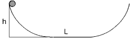
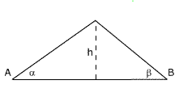

Desde una altura h se deja deslizar una
bola por una rampa de ángulo α. A continuación de
la rampa hay una superficie horizontal, determina cuanto recorrerá
la bola por ella hasta detenerse.
El coeficiente de rozamiento con todas las superficies es μ
 |
Se deja caer una bolita por una rampa de longitud L y ángulo α, a continuación de la cual hay otra rampa de ángulo β . Determina cuanto subirá la bolita por esta rampa. |
h = 2 m, L = 18.3 m |
Se suelta en el punto A una bola de 1 kg que llega al punto B con una velocidad de 6 m/s y se detiene en el punto C. Calcular: a) El trabajo del rozamiento en el recorrido AB b) El coeficiente de rozamiento |

Se lanza un bloque con velocidad v0 hacia arriba por una rampa de ángulo α y coeficiente de rozamiento μ. El bloque sube hasta detenerse y vuelve al punto de partida, determina la velocidad con que llega
 |
Se abandona una bolita en
la posición mostrada, determina donde se detendrá.
Las superficies curvas son lisas y el coeficiente de rozamiento
con la superficie horizontal vale 0.1. |
Un bloque de 1 kg, en reposo sobre una superficie horizontal, está en contacto con un muelle de constante 400 N/m comprimido 5 cm. Se libera el muelle que al descomprimirse empuja al bloque, determina la distancia que recorrerá este hasta detenerse. Coeficiente de rozamiento entre bloque y superficie: 0.1
Un bloque de 2 kg está situado a 3 m por encima de un muelle, de constante 30 N/cm, colocado en posición vertical sobre el suelo. Se deja caer el bloque, determinar cuanto se comprimirá el muelle al recibir el impacto
 |
Desde el punto A se lanza una pelota con velocidad v0. Siendo el coeficiente de rozamiento µ determina la velocidad con que llegará a B |